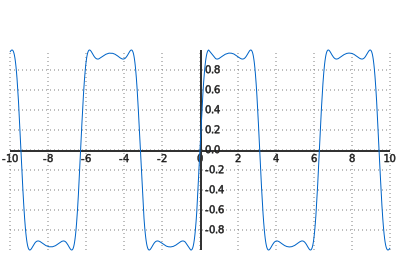

David Li
27 June 2013
http://live.sympy.org
What's this? Try it out!
>>> (1/cos(x)).series(x, 0, 10)
>>> integrate(x**2 * sin(x))http://goo.gl/ijLD4
Scan to evaluate
SymPy Gamma
Can export to SVG, used here; no link provided (it's rather slow).
